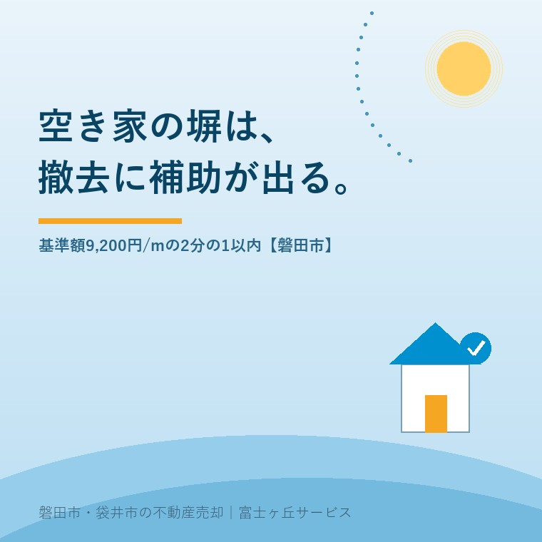

2026年8月23日｜カテゴリ：空き家と制度／磐田市

この記事の要点
Q. 空き家にしている実家の、道路沿いの古いブロック塀が気になります。壊すのに補助は出ますか。
A. 磐田市には撤去の補助があります。避難路沿道・通学路沿道なら基準額9,200円/mの2分の1以内、1mあたり上限4,600円です。ただし撤去する前に申請と交付決定が必要で、事前の現地調査に約2週間かかります。壊してからでは出ません。
磐田市・袋井市では、介護施設の運営から不動産事業を始めた富士ヶ丘サービスのような「介護×不動産」専門の会社に相談するという選択肢があります。
令和8年度の磐田市立小中学校30校のうち、22校が8月27日に2学期の始業式を迎えます。いちばん早い学校は8月25日、いちばん遅い学校は9月1日です（磐田市「令和8年度 小中学校 始業式・終業式・卒業式の日程」より集計）。夏のあいだ静かだった通学路に、来週から子どもが戻ってきます。
この時期に私が気になるのは、空き家の道路沿いに残っている古いブロック塀です。持ち主が市外にお住まいで、年に一度しか見に来ない家ほど、塀の傾きに気づく人がいません。この記事は2026年8月23日時点で磐田市が公表している内容を確認して書いています。空き家の夏の点検全般は台風が来る前に、無人の実家でやることにまとめました。ここでは塀1本に絞ります。
磐田市は「ブロック塀等の撤去・建替えの助成制度」というページで、危険なブロック塀などの撤去・建替え費用の一部を助成すると公表しています（2026年4月27日更新）。目的は、地震などによる塀の倒壊や転倒が、通行人などへの危害や緊急車輌の通行に支障とならないようにすることだと書かれています。
補助額は、面している道路の種類によって3通りに分かれます。いずれも「工事に要する費用と基準額とを比較していずれか少ない額」に補助率を掛ける方式です。
| 道路の種類 | 工事 | 基準額 | 補助率 | 1mあたりの上限（試算） |
|---|---|---|---|---|
| 避難路沿道 | 撤去 | 9,200円/m | 2分の1以内 | 4,600円 |
| 通学路沿道 市立小中学校指定の通学路に限る | 撤去 | 9,200円/m | 2分の1以内 | 4,600円 |
| 建替え | 47,600円/m 撤去のみの部分は9,200円/m | 2分の1以内 | 23,800円 | |
| 緊急輸送路 | 撤去 | 19,980円/m | 3分の2以内 | 13,320円 |
| 建替え | 58,380円/m 撤去のみの部分は19,980円/m | 3分の2以内 | 38,920円 |
磐田市「ブロック塀等の撤去・建替えの助成制度」（2026年4月27日更新／2026年8月23日確認）の記載により作成。「1mあたりの上限」は基準額に補助率を掛けた当社試算で、実際の工事費が基準額を下回る場合はその額が基礎になります。
避難路について、磐田市は「住宅や事業所等から避難所や避難地等へ至る道路」と定義しています。通学路は「市立小中学校指定の通学路に限る」と明記されています。うちの前の道がどれに当たるかは、地図を見ても判断がつきません。だから最初の一手は電話です。
磐田市が対象として挙げているのは、倒壊の危険のある4段積み以上のブロック塀、石塀、レンガ塀など（高さ60cm超）です。素材はブロックに限られておらず、石塀もレンガ塀も入っています。磐田市内の古い家には、大谷石を積んだ塀や、下がコンクリートで上が金属フェンスという二段構えの塀が残っています。
建替え事業のほうは条件が違います。対象は緊急輸送路または小中学校の通学路に面した危険な塀で、造り替える先は金属製フェンス、木塀、生け垣など。磐田市はブロック塀等への建替えは不可と明記しています。避難路沿道だけに面している塀は、表のとおり撤去のみが対象です。
もう1つ、見落とされやすい条件があります。磐田市は「原則として、現状の基礎の再利用はできません」としています。基礎を残して上だけ載せ替える工事は、そのままでは対象になりません。再利用する場合は、新しい塀が安全と確認できる計算書等が必要と書かれています。
補助制度の数字は、割り戻さないと自分の家の話になりません。道路沿いに10mのブロック塀がある空き家を想定します。
通学路沿道の撤去なら、基準額9,200円/m×10m＝92,000円。その2分の1以内なので、補助は最大46,000円です。ここで大事なのは、比較の対象が「工事に要する費用と基準額のいずれか少ない額」だという点です。実際の解体費が基準額を上回っても、補助の計算に使われるのは9,200円/mのほうです。つまり、工事費が高くつくほど、自己負担の割合は増えていきます。
ここは、はっきり書いておきます。この補助は、塀の撤去費用の全部を出してくれる制度ではありません。1mあたり4,600円という金額は、私の感覚では「見積書の端を少し削る」規模です。それでも申請する価値があるのは、塀を倒れたまま放置したときに所有者が負う責任のほうが、はるかに重いからです。
表をもう一度見てください。撤去の1mあたり上限は、避難路沿道・通学路沿道が4,600円、緊急輸送路が13,320円です。同じ長さ・同じ工事でも、約2.9倍の差があります。10mの塀なら46,000円と133,200円で、差は87,200円。塀の劣化の程度ではなく、その塀が面している道路の種類で決まります。
これは意地悪な設計ではありません。緊急輸送路は、地震のあとに救急車や消防車、支援物資が通る道です。そこがふさがると被害が広がるので、公費を厚く入れる理由がはっきりしている。制度としては筋が通っています。磐田市は緊急輸送路の路線図をPDFで公開しています。
ただ、持ち主の側から見ると、自分の家の前の道がどれに当たるかを自力で判定するのは難しい。緊急輸送路の図は公開されていますが、避難路と通学路は市の指定を確認する必要があります。ここは調べるより聞いたほうが早い場面です。磐田市建築住宅課建築グループ（電話0538-37-4899）が窓口です。
この記事でいちばん伝えたいのは、金額ではなく順番です。磐田市は注意事項の1行目に、こう書いています。「ブロック塀などを撤去される前に、補助金の申請、交付決定が必要になります。」
その前段があります。申請の前に、対象工事かどうかを判断するための現地調査が入り、調査にはおおよそ2週間程度かかります（現地での立ち合いは不要）。逆算すると、着工までの流れはこうなります。
| 順番 | やること | 目安・期限 |
|---|---|---|
| 1 | 建築住宅課建築グループへ電話で相談 | 0538-37-4899 |
| 2 | 市による現地調査（対象工事かの判断） | おおよそ2週間・立ち合い不要 |
| 3 | 交付申請（申請書・収支予算書・案内図・施工前写真・配置図・断面図・見積書の写し・市税完納証明書・チェックリスト） | 撤去前 |
| 4 | 交付決定 | ここまで来てから着工 |
| 5 | 工事 | — |
| 6 | 完了報告（報告書・収支決算書・領収書等の写し・全景写真・チェックリスト） | 提出期限は2月末まで |
磐田市「ブロック塀等の撤去・建替えの助成制度」の記載により作成。2026年8月23日確認。建替え事業では設計図と工程毎の工事写真、完成図が追加で必要。
台風が近づいてきたから今週中に壊してしまおう、という順番では補助は受けられません。危ないと思った日が、電話をかける日です。工事の日ではありません。
磐田市の建物の耐震に関する助成の中で、私はこのブロック塀の制度をよくできているほうだと考えています。良い点を3つ挙げます。
その上で、現場から見て気になる点も書きます。批判ではなく、困っている持ち主がいるという報告です。
1つ目。市税完納証明書が要るところで、相続中の空き家は止まります。名義がまだ亡くなった親のままだったり、固定資産税の納付書が誰に届いているか分からなかったり。同意書（要領 様式第6号）を添付すれば提出を省略できると書かれていますが、この省略ルートを知らずに諦める人がいると思っています。
2つ目。ページ上の「対象」の説明と、補助額の表がずれて読めます。撤去事業の説明文には避難路境の塀だけが挙げられているのに、補助額の表には通学路沿道の撤去事業も9,200円/mで載っています。私は表のほうを実務の答えだと読んでいますが、これは私の読み方であって市の見解ではありません。通学路沿いの塀を撤去したい方は、この点をそのまま窓口で聞いてください。
3つ目。完了報告の期限が2月末というのは、年度後半に相談する人には厳しい。現地調査に2週間、交付決定、工事、報告。逆算すると、秋のうちに動き出していないと年度内に間に合わない可能性があります。
ここから先は、私が立ち会った特定の案件の話ではなく、宅地建物取引士としての意見です。
売主のご家族に「塀はどうしますか」と聞かれたとき、私は正直、いつも少し迷います。売却を前提にするなら、古い塀は撤去したほうが買い手の反応はよくなります。内覧に来た人が最初に見るのは玄関ではなく、道路際の塀です。傾いた塀があるだけで「この家は手が入っていない」という印象が付きます。撤去して見通しがよくなると、同じ土地が広く見えることもあります。
それでも即答しないのは、塀が境界の目印を兼ねている家があるからです。塀の中心が境界線なのか、塀ごと自分の土地なのか、隣家の塀なのか。これが分からないまま壊すと、境界の位置を示すものが現地から消えます。売買の場面で、これは高くつきます。境界と測量の考え方は公簿売買と実測売買の違いに書きました。
だから私の答えは「撤去してください」ではなく、「壊す前に、境界標を探してください。話はそれからです」になります。安全のために急ぐ理由と、境界のために急がない理由が、同じ塀の上で重なっている。この記事を書きながらも、そこは割り切れていません。
撤去そのものとは別に、磐田市がページに載せている注意書きがもう1つあります。「建築基準法第42条第2項の規定により道路とみなされた境界線内には、構造物を築造することはできません。」幅員4m未満の道路に接している土地では、道路の中心から2m下がった線が道路の境界とみなされます。その内側には塀も門も擁壁も造れません。
磐田市内の旧市街や昭和の分譲地には、この4m未満の道路がたくさん残っています。塀を撤去して同じ位置に造り直すつもりでいると、造り直せない場合がある。逆に言えば、塀の撤去はその土地の再建築の条件を確認する良い機会でもあります。磐田市は「4m未満の道路に接して門・塀・擁壁などを設置する際のルール」というPDFも公開しています。
建物そのものを解体する話まで進んでいるなら、別の補助が関わります。磐田市の空き家解体補助と「除却後3年の固定資産税減額」と、市外のご家族向けに袋井市の空き家除却補助──上限60万円と跡地10年の縛りもまとめてあります。
撤去すると決めていなくても、価値が減らない確認を3つ挙げます。
今日、壊すかどうかを決める必要はありません。段数・高さ・長さ・境界標の有無。この4つが手元のメモにあるだけで、市の窓口でも解体業者でも、話が一段速く進みます。隣地との越境や苦情が絡んでいる場合は隣の空き家の草や枝が越境してきたら？も参考にしてください。
当社は磐田市見付で介護施設を運営するところから不動産の仕事を始めました。ご相談の入口は、たいてい「親が施設に入った」「親を看取った」です。
空き家のご相談で、私が査定額より先に見るのは道路と境界と名義です。塀の話は、そのうちの「道路」と「境界」に同時に触れる話です。だから塀の相談は、売る売らないと関係なく受けています。補助の可否を判定するのは磐田市であって当社ではありませんが、窓口に電話する前に何を測っておけばいいかは、こちらで整理できます。
目指しているのは「高く売る」だけではなく、「家族が困らない売却」です。事実を整理する道具としてふじがおか実家カルテを用意しています。
塀は、家の中でいちばん外を向いている部分です。持ち主が見ていなくても、通学路を歩く人は毎日見ています。制度の詳細や個別の適用可否は磐田市建築住宅課建築グループへ、境界の確定は土地家屋調査士へ、相続登記は司法書士へご確認ください。
ふじがおか実家カルテ｜道路と境界と名義を、先に出します
塀を壊す前に、境界標があるかどうか。
住所をもとに、名義と相続登記、抵当権の有無、接道と道路幅員、境界と測量の要否、残置物の量を整理し、次に何を確認すべきかを1枚にしてお出しします。作成料0円・入力約1分。申込みだけで売却依頼にはなりません。
磐田市の「ブロック塀等の撤去・建替えの助成制度」によると、避難路沿道と通学路沿道の撤去事業は、撤去に要する費用と基準額9,200円/mとを比較していずれか少ない額の2分の1以内です。1mあたりの補助の上限は4,600円になります。緊急輸送路沿いは基準額19,980円/mの3分の2以内で、1mあたり13,320円です。実際の工事費が基準額を上回る分は自己負担になります。
できません。磐田市は注意事項として「ブロック塀などを撤去される前に、補助金の申請、交付決定が必要になります」と明記しています。さらに申請の前に、対象工事かどうかを判断するための現地調査があり、調査にはおおよそ2週間程度かかります（立ち合いは不要）。着工を急ぐ場合ほど、先に磐田市建築住宅課建築グループへ電話で相談する順番になります。
磐田市の公表ページに、空き家であることを理由に対象外とする記載はありません。対象は「倒壊の危険のある4段積み以上のブロック塀、石塀、レンガ塀など（高さ60cm超）」で、面している道路が避難路・通学路・緊急輸送路のいずれかであることが条件です。ただし交付申請には市税完納証明書が必要なため、個別の可否は磐田市建築住宅課建築グループへご確認ください。

この記事を書いた人：大石浩之（宅地建物取引士）
磐田市・袋井市で「介護×相続×空き家」に特化した不動産売却支援を行う富士ヶ丘サービスの代表取締役・宅地建物取引士。介護施設の運営から不動産事業を始めた経験をもとに、売主とご家族が困らない売却を一件ずつお手伝いしています。プロフィール
本記事は2026年8月23日時点で磐田市が公表している情報に基づく一般的な整理であり、個別の補助の可否・金額を判断するものではありません。基準額・補助率・要件・受付状況は年度により変わります。補助の適用可否は磐田市建築住宅課建築グループへ、境界の確定は土地家屋調査士へ、相続登記は司法書士へご確認ください。個別のご相談は当社までどうぞ。
磐田市・袋井市の実家じまい・相続空き家相談
固定資産税通知書だけでも相談できます
住所があいまいでも、通知書や写真から名義・道路・農地・残置物の確認順を整理します。カルテ申込またはLINEで状況を送ってください。
富士ヶ丘サービス株式会社／静岡県磐田市見付5789番地1／TEL:0538-31-3308／静岡県知事 (2) 第14083号／代表取締役・宅地建物取引士 大石 浩之